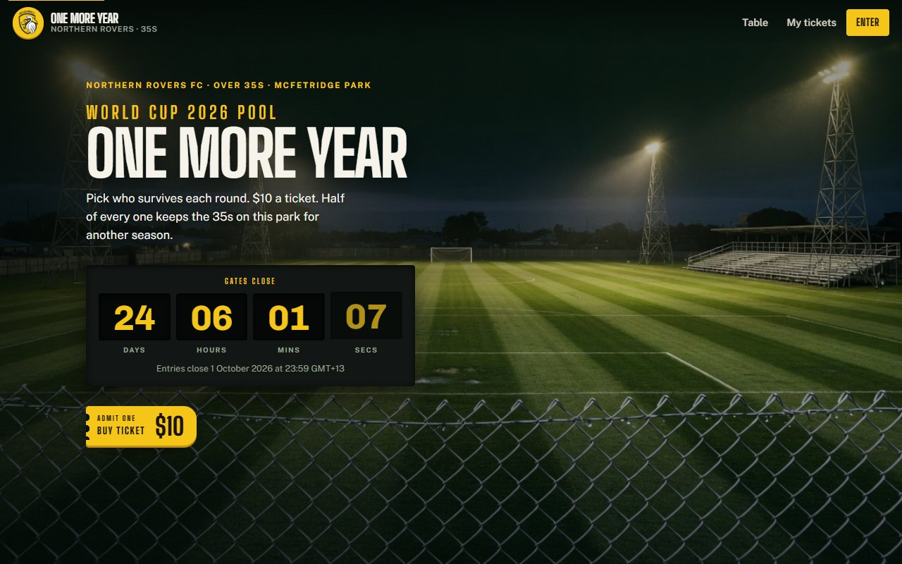

The problem
Every tournament, someone in the group runs the pool on a spreadsheet. It works until it doesn't: two people send picks after kick-off, one sheet gets edited by the wrong person, and nobody can prove what the standings were on Sunday night. The argument is the tradition; the admin is not.
I wanted the version where you tap a link in the group chat, pick your teams, and never think about it again.
Constraints I set myself
- No sign-up. Every account screen loses half the group. If it needs a password, it will not get used.
- One deadline, enforced by the server. Not a message asking people to be honest.
- It has to be good on a phone, because that is the only place anyone will open it.
- Cheap and boring to run. One small VPS, one process, one file of a database.
What I built
A Flask app using the application-factory pattern with blueprints split by audience: a public side that takes entries, and an admin side that enters results. Data lives in SQLite, which for a few dozen entries and a read-heavy standings page is not a compromise — it is the right answer. The whole thing is one process behind Nginx, kept alive by systemd, on a domain pointed at a small VPS.
Decision 1 — a link per person instead of an account
Everyone gets their own URL. Open it and you are you; there is nothing to remember and nothing to reset. The cost of that convenience is that the URL is the credential, so it has to be unguessable — a database id in the path would mean anyone could count upward and read, or edit, their neighbour's entry.
# Every entry link carries an opaque token, never the row id.
# 16 bytes from secrets is not something you walk up to by hand.
import secrets
def new_entry_token() -> str:
return secrets.token_urlsafe(16)Excerpt — app/models.py
Decision 2 — the deadline lives in config, not in the code
Kick-off moves. A deadline hard-coded in a template means a redeploy at the worst possible moment, so it sits in the environment and the server is restarted. Every write path checks it, not just the one that renders the button — hiding a form is a courtesy, refusing the POST is the rule.
Decision 3 — static assets that actually update
I shipped a redesign and it did not appear. Nginx was serving the stylesheet with a seven-day expiry and the filename had not changed, so returning visitors kept the old one — the people who use the app most were the last to see the fix. The answer is to make the URL change whenever the file does:
@app.url_defaults
def stamp_static(endpoint, values):
"""Append the file's mtime to every static URL, so a changed file
is a changed URL and the browser cache stops being a liability."""
if endpoint != "static" or "filename" not in values:
return
path = os.path.join(app.static_folder, values["filename"])
try:
values["v"] = int(os.stat(path).st_mtime)
except OSError:
passExcerpt — app/__init__.py
Nine lines, no build tool, no asset pipeline. url_for('static', …)
keeps being called exactly the way it already was everywhere in the templates.
The phone problem
The first version looked fine on my monitor and fell apart on a phone. The culprit was not "responsiveness" in general — it was one nested grid: a round of sixteen laid out as columns, each column holding its own grid of team buttons. At 390 pixels wide that is a grid inside a grid inside a 12-pixel gutter, and team names were being hyphenated down to two characters.
I fixed it by collapsing the outer grid to a single column below 560px and
letting the inner one keep two, then setting every tappable thing to a 44px
minimum. I also managed to break the desktop layout while fixing the phone —
I had narrowed a shared minmax() and clipped the later rounds at
1280px — which is why I now sweep a set of widths before I call a layout done,
rather than checking the one I was looking at.
What I would do differently
- Authorisation first, not after. The first cut identified entries by their row id and trusted whoever held the link. That is a broken access control, and I found it by auditing my own app the way I have been taught to audit someone else's. Unguessable tokens and a check on every write path is the pattern I now start with.
- Cache strategy is part of deployment. A long expiry header and unversioned filenames is a decision, even when nobody decides it.
- Test at three widths, not one. Cheap, and it would have caught the regression above before it shipped.
Where it got to
It ran the whole tournament. Nobody asked me how to use it, nobody sent me picks by text, and the standings were never in dispute — which for a tool like this is the entire success criterion. It is also the project that turned into a product: Sweepstake is the same idea rebuilt so that any club can run its own.
Next case study